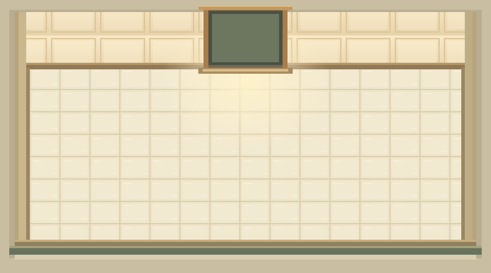
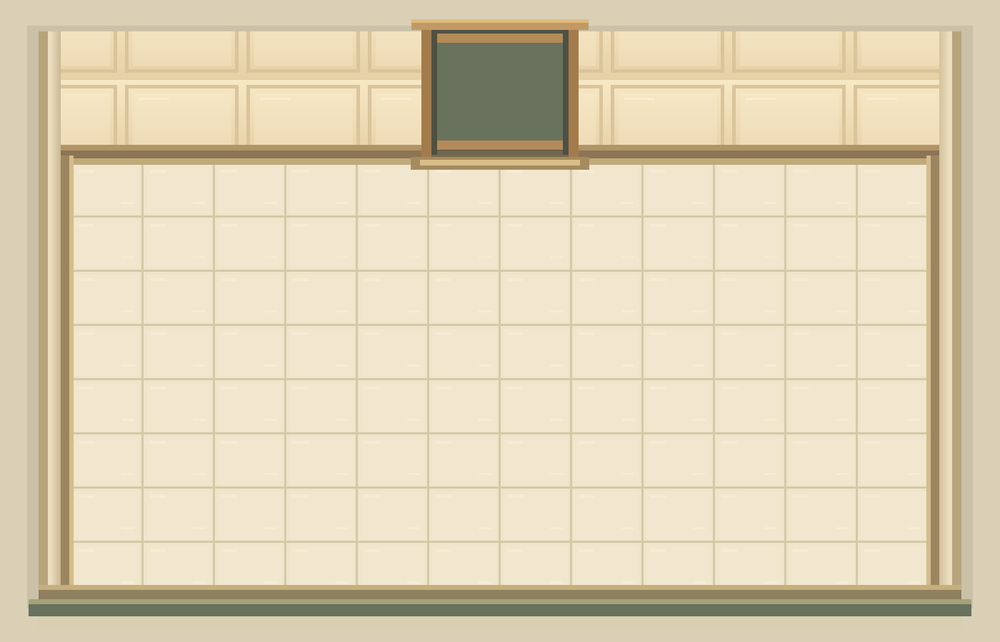

TÀI NGUYÊN GAME · BẢN THỬ
Thư viện sprite
Bộ sprite pixel nguyên bản, tông ấm và nét khối gọn, được vẽ riêng cho Tiệm Nhỏ.
BẾP NHỎ
Món ăn & thức uống
GÓC NHÀ HÀNG & BẾP
Vật dụng & bối cảnh
NỀN ĐANG DÙNG TRÊN MÁY TÍNH
Bối cảnh ngang

Bản ngang này được dùng làm nền trên màn hình máy tính. Bố cục điện thoại tiếp tục dùng nền cũ.
BẢN THIẾT KẾ BAN ĐẦU
Bối cảnh phòng rộng v1

Tệp gốc được giữ lại riêng để tiếp tục chỉnh sửa.